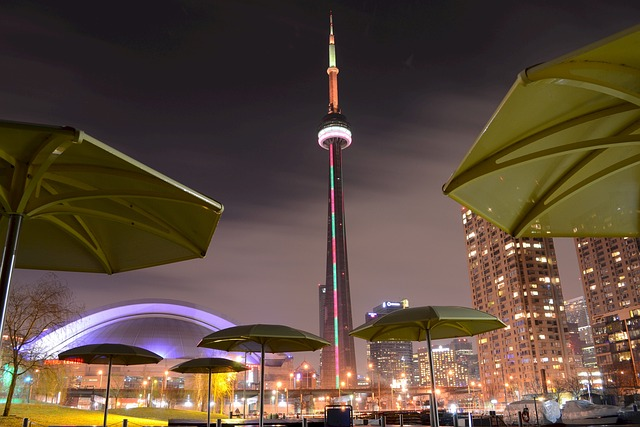
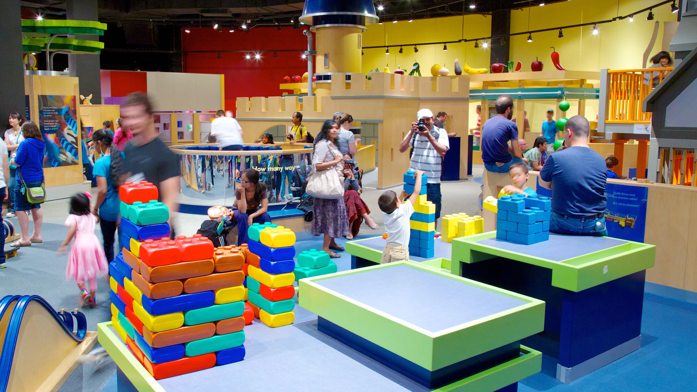
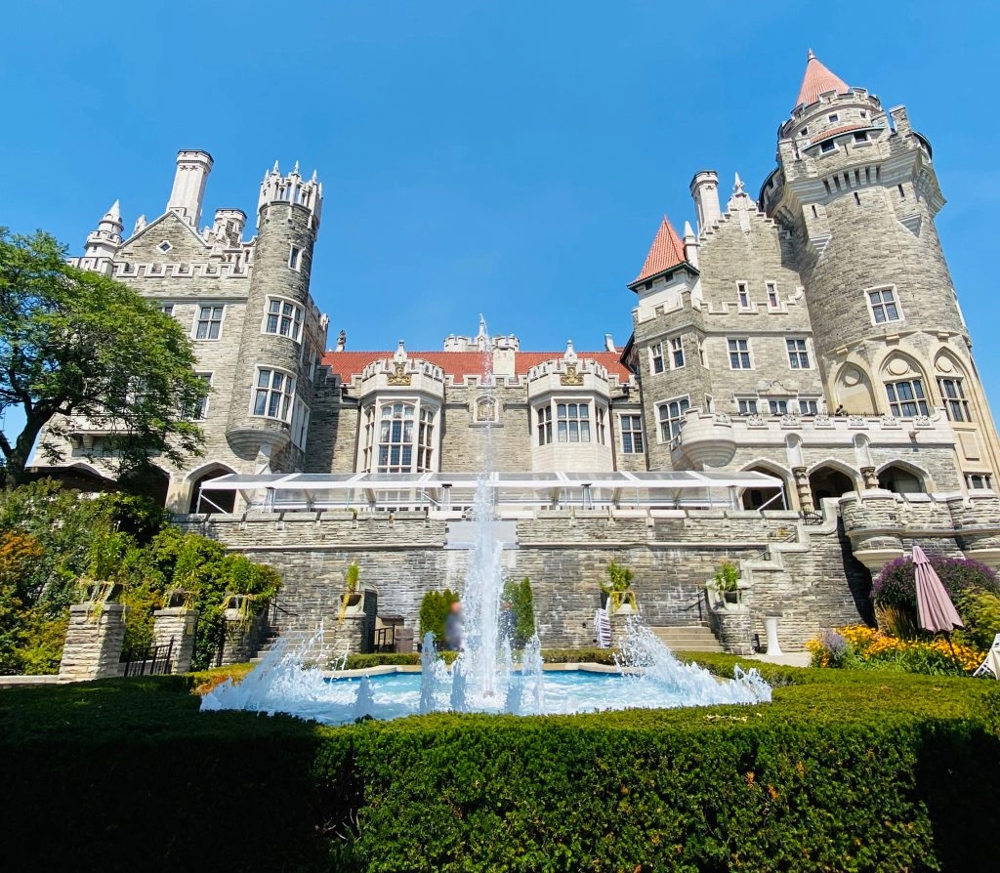

Famous Attractions

Cn Tower
One of Canada’s greatest landmarks and one of the seven wonders of the modern world, the CN Tower has come to define the Toronto skyline...

Ontario Science Centre
With over 500 interactive experiences, the Ontario Science Centre is one of Canada’s most famous cultural landmarks...

Casa Loma
A prime example of modern Toronto’s commitment to its rich history, Casa Loma was first built in 1914 by financier Sir Henry Pellatt...

Ripley's Aquarium
More than 5.7 million litres of water, North America's longest underwater viewing tunnel, and more than 100 interactive opportunities...
+ Much More
101 Fun Things To Do in Toronto. Create your own Toronto summer bucket list. Even with just 48 hours in Toronto...